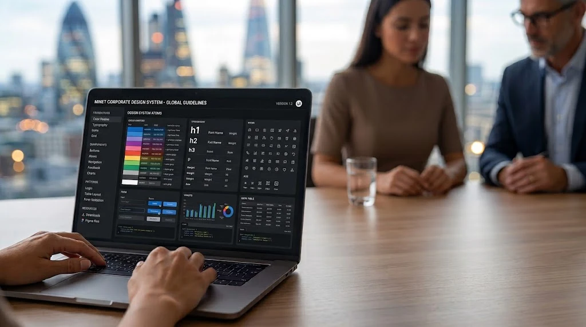
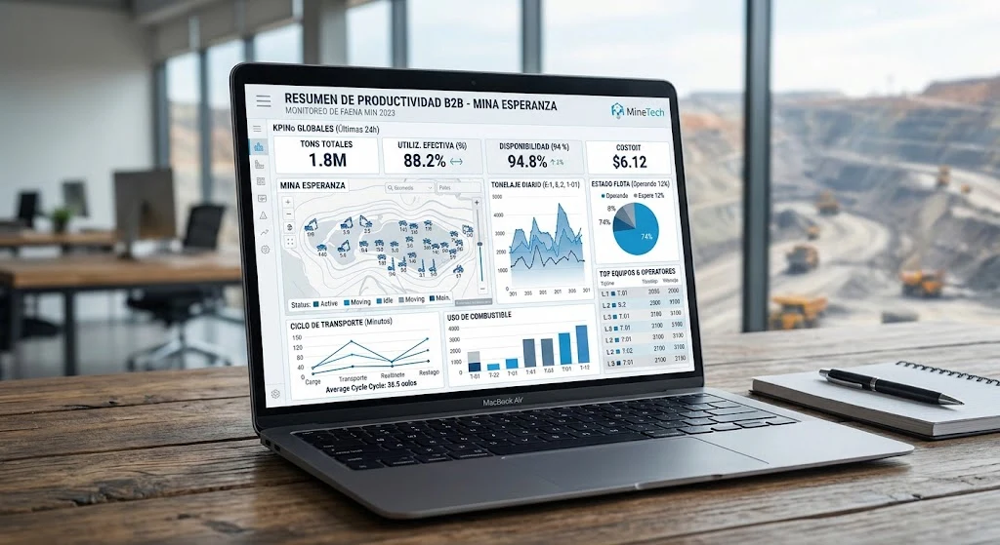
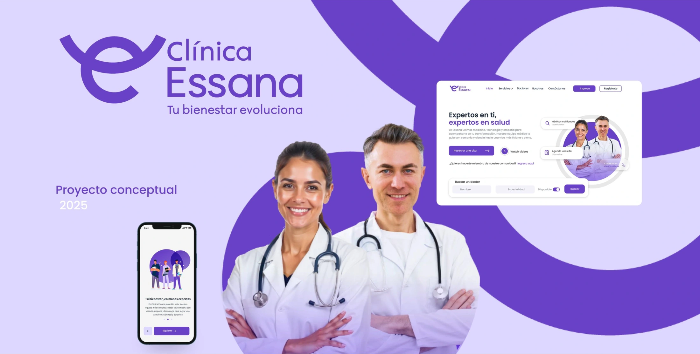

Portafolio / Trabajo seleccionado
Decisiones de diseño.
Contextos reales.
Proyectos de sistemas de diseño, evaluación de usabilidad y experiencias móviles.

Regcheq
Una base visual compartida entre diseño y desarrollo.
Explorar caso
Komatsu
Hacer más clara la navegación de un producto complejo.
Explorar casoCademsmart
De dispositivos industriales a una interfaz Android.
Explorar caso
Claro Chile
Optimización de Flujos: Rediseño App Claro Chile (Cliente Prepago).
Explorar caso
Clínica Essana
Manual de Marca e identidad Corporativa
Explorar caso
Clínica Essana · Web y app
Tu bienestar evoluciona
Explorar caso